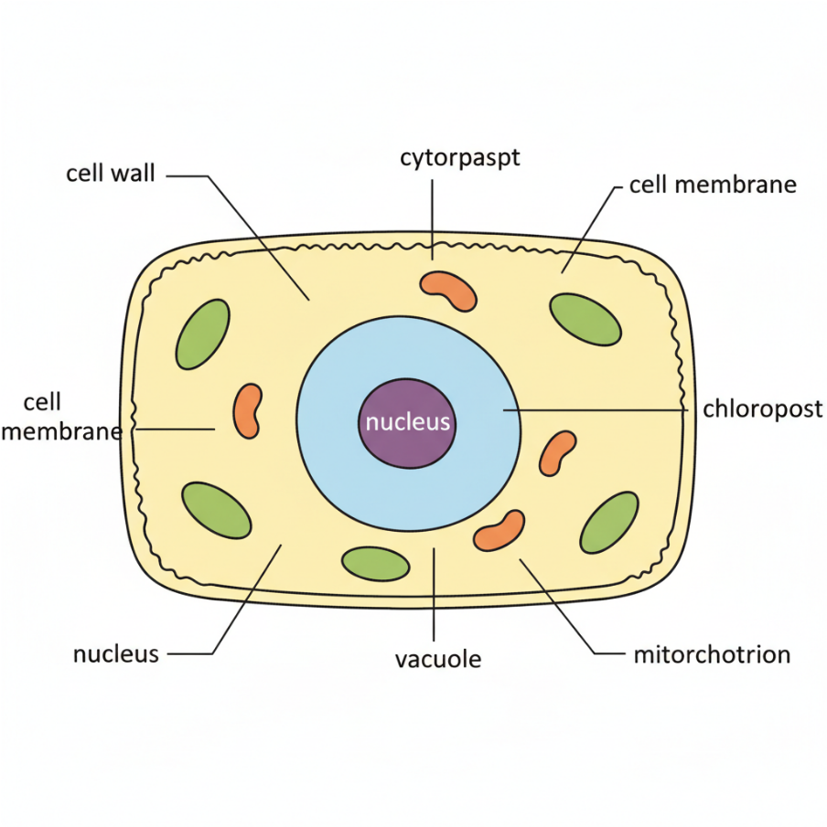
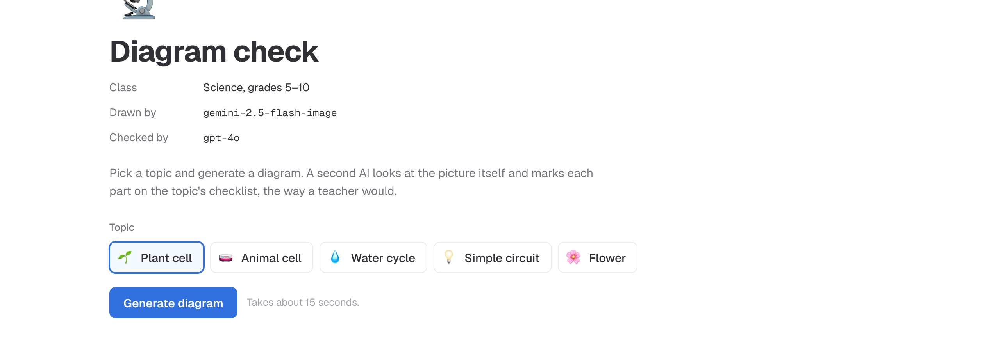
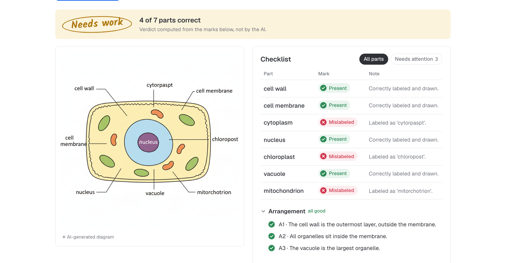
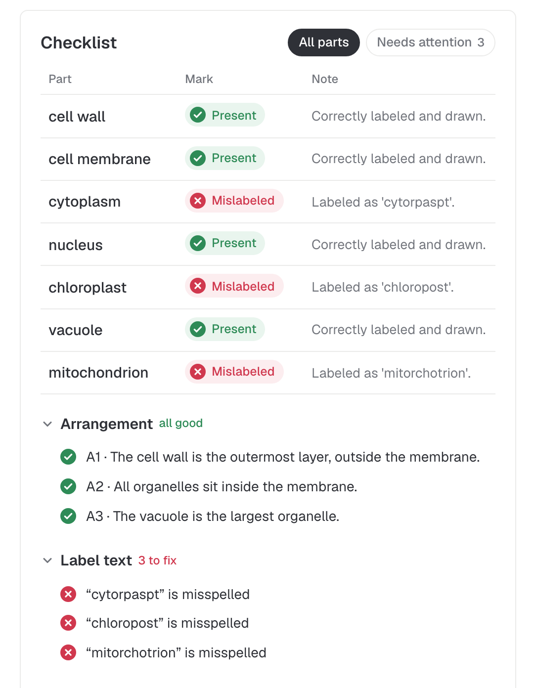
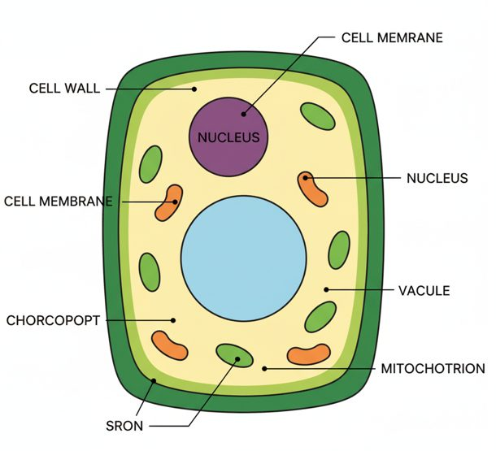
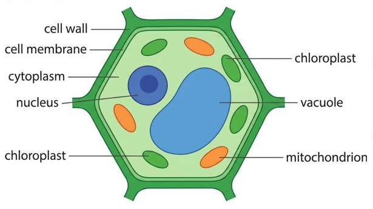

CPSC 415 · Team Project 1
A web app that draws labeled science diagrams and checks its own work.
We asked for a plant cell. Gemini labeled the cytoplasm “cytorpaspt.”
A student studying from this would learn a word that doesn't exist.

gemini-2.5-flash-image gets the topic's exact labels and returns a PNG.
It gets the image and a checklist, not our prompt, and answers in JSON.
verdict.py gives the gradePlain Python turns the marks into good, needs work, or poor.
localhost:8000 · plant cell
screenshots on the next slides, just in case



Javier


[what we did about it]
[so what]
[one or two lines]
[one or two lines]
[one or two lines]
[one-line recap]
github.com/javieromolopez/TP1